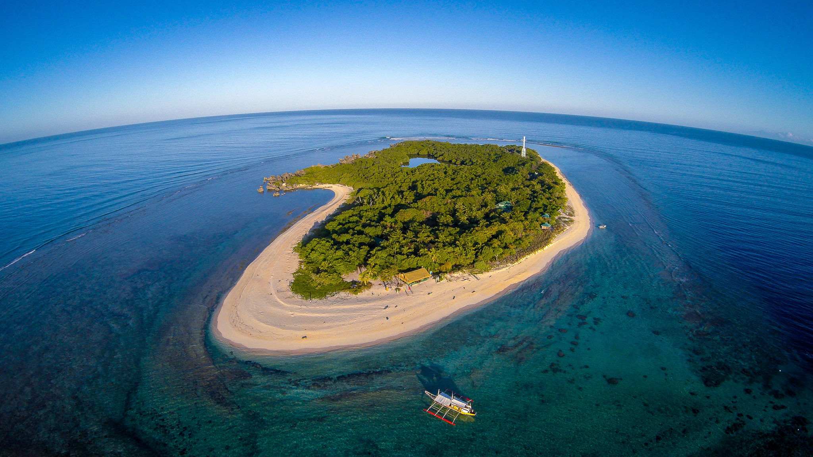

Introduction
The Philippines is home to some of the most stunning natural
wonders in Southeast Asia. From clear water beaches to ancient
buildings, here are five spots every traveler should see.
Apo Island

Apo Island, famous for world-class marine biodiversity, abundant sea turtles, and pioneering community-based conservation.
Apo Island is a tiny volcanic island off Negros Oriental, Philippines,
globally renowned as a pioneering marine sanctuary and premier eco-tourism destination.
Fort Santiago
 Fort Santiago, famous for its key military defense structure, a colonial prison,
and the final imprisonment site of Philippine national hero Dr. José Rizal.
Fort Santiago, famous for its key military defense structure, a colonial prison,
and the final imprisonment site of Philippine national hero Dr. José Rizal.
Fort Santiago is a 16th-century historic citadel and defense fortress located in Intramuros,
Manila, at the mouth of the Pasig River.
Kawasan Falls
 Kawasan Falls, famous for its glowing, crystal-clear turquoise waters and lush jungle surroundings.
Kawasan Falls, famous for its glowing, crystal-clear turquoise waters and lush jungle surroundings.
Kawasan Falls is a famous multi-layered waterfall system with striking turquoise-blue
natural pools located in the jungle of Badian, Cebu, Philippines.
Lake Kayangan
 Lake Kayangan, famous for being the cleanest and clearest lake in the Philippines (and often-cited in Asia),
featuring dramatic limestone cliffs and crystal-turquoise water.
Lake Kayangan, famous for being the cleanest and clearest lake in the Philippines (and often-cited in Asia),
featuring dramatic limestone cliffs and crystal-turquoise water.
Lake Kayangan is a stunning, crystal-clear freshwater lake on Coron Island in Palawan, Philippines,
widely known as the cleanest lake in the country.
Secret Lagoon
 Secret Lagoon, famous for its hidden entrance and dramatic limestone karst walls on Miniloc Island.
Secret Lagoon, famous for its hidden entrance and dramatic limestone karst walls on Miniloc Island.
Secret Lagoon in El Nido is a hidden, shallow emerald pool enclosed by towering karst limestone cliffs on Miniloc Island.